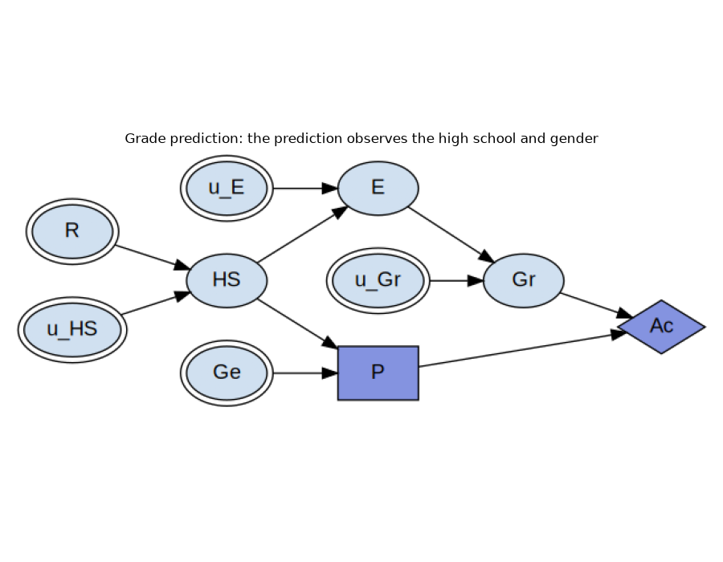
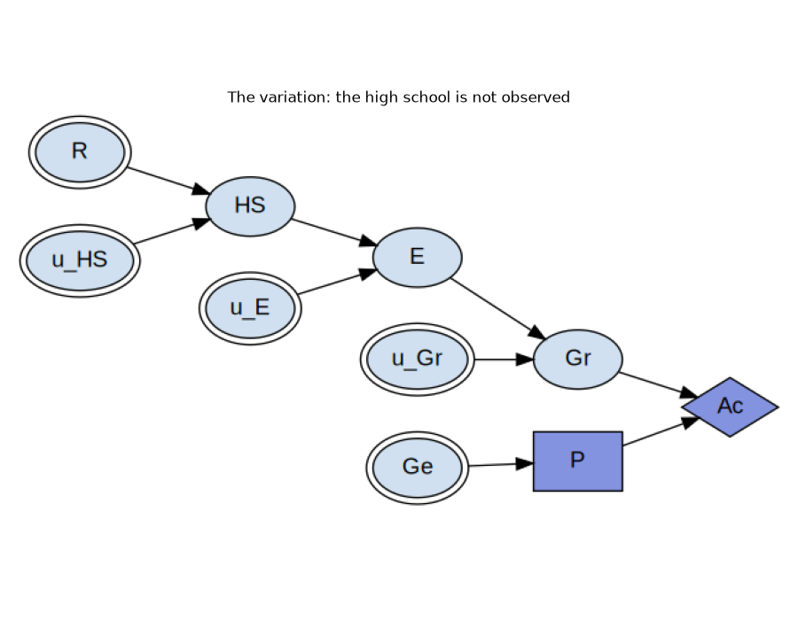
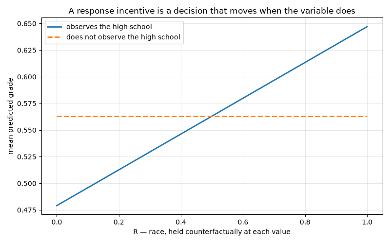
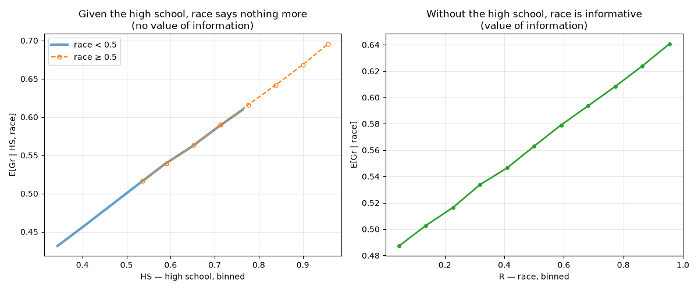

Note
Go to the end to download the full example code.
Incentives in Grade Prediction: Observing Versus Responding¶
Grade prediction separates value of information from the response incentive. A university that never collects an applicant’s race can still respond to race, and be unfair for doing so.
A university predicts an applicant’s grade and is paid for accuracy. Race reaches the grade only through the high school the applicant attended, so whether the prediction may observe that high school – the one edge that differs between the two diagrams below – decides which of two easily confused properties race has: whether observing it would buy any accuracy at all, and whether every optimal prediction responds to it regardless. The second is the one that matters normatively. A predictor that responds to a sensitive attribute is counterfactually unfair in the sense of Kusner et al. [2], whatever data its designers chose to collect, and preventing that is what the variation below is for.
Both diagrams come from Everitt, Carey, Langlois, Ortega and Legg [1] and are
encoded as blocks in skagent.models.safety.incentives, with the criteria
read off the diagram by skagent.relevance before any payoff is chosen and
without solving anything. The companion page,
Incentives in Content Recommendation: Wanting Control Versus Having It,
develops the other pair of criteria.
References¶
import matplotlib.pyplot as plt
import numpy as np
from skagent.models.safety.incentives import (
draw_shocks,
grade_predictor_block,
grade_predictor_redesign_block,
print_incentive_table,
)
from skagent.relevance import minimal_reduction
from skagent.utils import plot_block_diagram
def binned_mean(x, y, edges):
"""``(E[x | bin], E[y | bin])`` for each bin.
Each point sits at the bin's mean ``x`` rather than at its midpoint, so that
two groups whose ``x`` is distributed differently *within* a bin are still
compared at the same ``x``. Plotting against midpoints instead makes a group
with more mass at the top of its bins look as though it had a higher ``y``
for the same ``x``.
"""
index = np.digitize(x, edges) - 1
occupied = [b for b in range(len(edges) - 1) if (index == b).any()]
return (
np.array([x[index == b].mean() for b in occupied]),
np.array([y[index == b].mean() for b in occupied]),
)
The Model¶
A university predicts an applicant’s grade, P, and is paid for accuracy,
Ac: the closer the prediction lands to the grade Gr the applicant goes
on to earn, the better it does. Race R affects which high school HS the
applicant attends, the high school affects the education E they receive,
and that education affects the grade. Gender Ge is observed by the
predictor and affects nothing else at all.
The prediction observes the high school and gender. Everything else it must do without.
plot_block_diagram(
grade_predictor_block,
"Grade prediction: the prediction observes the high school and gender",
)

The block carries one node more than the diagram as usually drawn, per chance
mechanism: the exogenous noise that writing each mechanism in structural-causal
form makes explicit. Those are the u_ names, and they are filtered out of
the tables below.
Value of Information, and the Response Incentive¶
The payoff is squared error, so the best prediction given whatever it observes is the conditional mean of the grade, and the payoff it achieves is the variance left over. Writing \(S\) for the set of variables the prediction observes, the value of information in a variable \(X\) is the payoff gained by letting the prediction observe \(X\) as well:
which is positive exactly when \(X\) says something about the grade that \(S\) does not already say. A response incentive in \(X\) is a different thing: a change in the prediction itself when \(X\) is changed counterfactually, every noise term held fixed,
Both are decided from the diagram alone, by
admits_voi() and
admits_ri() [3].
scim = print_incentive_table(grade_predictor_block, criteria=("VoI", "RI"))
node VoI RI
Ac n/a -
E yes -
Ge - -
Gr yes -
HS yes yes
P n/a n/a
R - yes
The row for R is the one to read first, because race admits a response
incentive while admitting no value of information.
Take the value of information first. The university would pay nothing at all for an applicant’s race. Race matters to the eventual grade only through the high school the applicant attended, and the high school is already observed, so it screens race off entirely. A university that goes to the trouble of collecting race data gains no accuracy in return.
The response incentive points the other way. Every optimal prediction rule nevertheless responds to race: change an applicant’s race and their high school changes with it, and since the prediction is a function of the high school, the prediction changes too. The university does not use race, and yet it cannot help but respond to it.
That gap is where the fairness question lives, and the answer to it is sharp. The counterfactual unfairness holds of every optimal policy, not merely of some, so it cannot be escaped by choosing a better prediction rule. That has a blunt consequence for how such a system is defended: the assurance that “we do not collect race” is a true statement about value of information, and it is no answer at all to the fairness question, which is a question about the response incentive.
Gender is the other instructive row, because it is observed and yet admits neither. Its information link is nonrequisite, which means the minimal reduction drops it.
information links dropped by the minimal reduction: {('Ge', 'P')}
The response incentive is read off that reduction rather than off the original graph, so it sees a diagram in which the prediction never looked at gender in the first place. That is why gender admits no response incentive despite being observed, and it is worth pausing on, because observing a variable and responding to it are genuinely different things.
The Variation¶
One edge changes: the prediction no longer observes the high school. The mechanisms, the payoff and the noise are all untouched, so whatever differs between the two tables is caused by that edge alone.
plot_block_diagram(
grade_predictor_redesign_block,
"The variation: the high school is not observed",
)

print_incentive_table(grade_predictor_redesign_block, criteria=("VoI", "RI"))
node VoI RI
Ac n/a -
E yes -
Ge - -
Gr yes -
HS yes -
P n/a n/a
R yes -
SCIM(10 nodes, 9 edges, decisions=['P'])
The R row has inverted. Race now admits value of information and no
response incentive, the exact opposite of what it admitted before, across a
change of one edge.
The response incentive is gone because, with nothing informative left to observe, the optimal prediction is the same number for every applicant. Nothing about an applicant can move it, race included, so the variation is counterfactually fair. Value of information appears for the complementary reason: with the high school no longer in the picture, race is the only thing left that carries any information about the grade, so now it would be worth observing after all.
The variation therefore buys fairness with accuracy, and the criteria say exactly where the payment is made. This is what a pair of diagrams is for. Neither one alone distinguishes the two properties, and an implementation that had quietly computed plain reachability from race would report the same answer on both.
Checking It Against the Mechanisms¶
Neither table looked at a mechanism. It is fair to ask whether they say anything true about these ones. The mechanisms are linear, so the conditional means the optimal rule needs are each a line of algebra: \(E[Gr \mid HS] = 0.42\,HS + 0.29\) when the high school is observed and, since gender carries nothing, the constant \(E[Gr] = 0.563\) when it is not.
Start with the response incentive, which is the second display above. Hold every noise term fixed, vary race alone, and watch the prediction.
block_observant, shocks = draw_shocks(grade_predictor_block)
block_blind, _ = draw_shocks(grade_predictor_redesign_block)
n = len(shocks["R"])
race_grid = np.linspace(0.0, 1.0, 11)
predictions_observant, predictions_blind = [], []
for race in race_grid:
counterfactual = {**shocks, "R": np.full(n, race)}
predictions_observant.append(
np.mean(
block_observant.transition(
counterfactual, {"P": lambda HS, Ge: 0.42 * HS + 0.29}
)["P"]
)
)
predictions_blind.append(
np.mean(block_blind.transition(counterfactual, {"P": lambda Ge: 0.563})["P"])
)
plt.figure(figsize=(8, 5))
plt.plot(
race_grid, predictions_observant, linewidth=2, label="observes the high school"
)
plt.plot(
race_grid,
predictions_blind,
linewidth=2,
linestyle="--",
label="does not observe the high school",
)
plt.xlabel("R — race, held counterfactually at each value")
plt.ylabel("mean predicted grade")
plt.title("A response incentive is a decision that moves when the variable does")
plt.legend()
plt.grid(True, alpha=0.3)
plt.tight_layout()

The first prediction tracks race; the second is a flat line. That is the response incentive and its absence, shown in the mechanisms rather than in the graph.
Now the value of information, which is the first display above. The claim was that race is worth nothing once the high school is known, which is \(\mathrm{VoI}(R) = 0\) at \(S = \{HS\}\), and that holds exactly when \(E[Gr \mid HS, R]\) does not depend on \(R\) – something we can estimate directly.
vals = block_observant.transition(shocks, {"P": lambda HS, Ge: 0.42 * HS + 0.29})
high_school, grade, race = vals["HS"], vals["Gr"], shocks["R"]
lower, upper = race < 0.5, race >= 0.5
hs_edges = np.linspace(high_school.min(), high_school.max(), 12)
r_edges = np.linspace(0.0, 1.0, 12)
fig, (left, right) = plt.subplots(1, 2, figsize=(12, 5))
# The two groups overlap only over part of the high-school range, and where they
# do the curves land on each other, so the second is drawn dashed on top of the
# first rather than hiding it.
styles = [
dict(linewidth=3, alpha=0.7),
dict(linewidth=1.5, linestyle="--", marker="o", markersize=5, fillstyle="none"),
]
for (mask, label), style in zip([(lower, "race < 0.5"), (upper, "race ≥ 0.5")], styles):
centres, means = binned_mean(high_school[mask], grade[mask], hs_edges)
left.plot(centres, means, label=label, **style)
left.set_xlabel("HS — high school, binned")
left.set_ylabel("E[Gr | HS, race]")
left.set_title(
"Given the high school, race says nothing more\n(no value of information)"
)
left.legend()
left.grid(True, alpha=0.3)
centres, means = binned_mean(race, grade, r_edges)
right.plot(centres, means, linewidth=2, marker="o", markersize=4, color="C2")
right.set_xlabel("R — race, binned")
right.set_ylabel("E[Gr | race]")
right.set_title("Without the high school, race is informative\n(value of information)")
right.grid(True, alpha=0.3)
plt.tight_layout()
plt.show()

On the left the two curves lie on top of each other: conditional on the high school, the grade does not depend on race, so observing race would add nothing to a predictor that already sees the high school. The upward slope on the right is that same information, made valuable by taking the high school away.
What the Criteria Cost¶
Both tables on this page were computed from the graph alone, with no payoff values, no distributions and no solving. The numeric checks came afterwards, and they confirmed what the graph had already said. That order is the point, because it means the criteria can screen a design before it is built, and a criterion that answers “no” rules the behaviour out for every way of filling in the numbers.
The direction in which these tests err is worth knowing. Soundness and completeness are properties of the diagram, and d-separation is conservative on the deterministic mechanisms these blocks are written with, so an incentive may be reported in a case where the functional effect happens to vanish. The converse cannot happen. A criterion here may cry wolf, but it will not miss one.
Total running time of the script: (0 minutes 0.703 seconds)